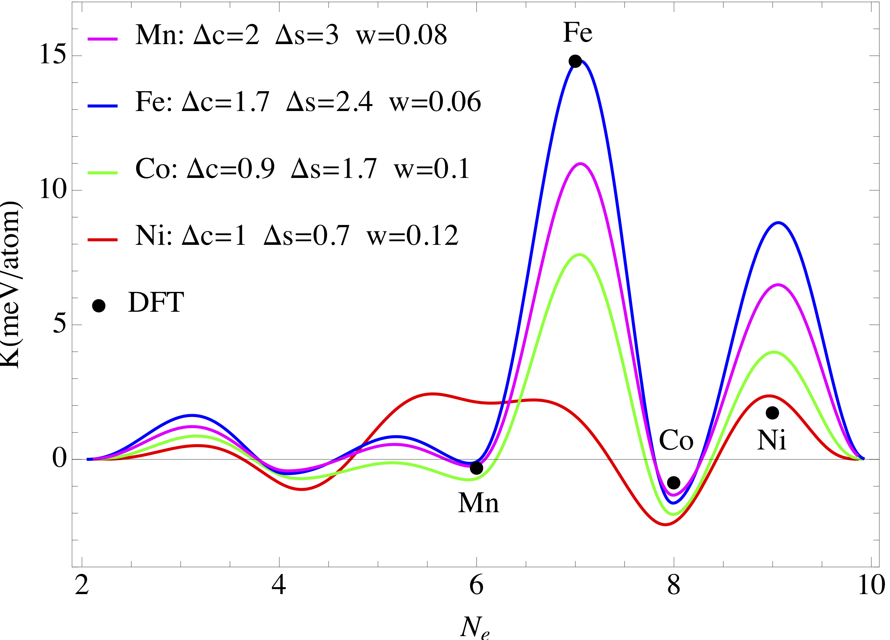

2.5 Analytical modeling
Featured work

Figure 2.5: Magnetocrystalline anisotropy energy as a function of \(T\) in Li\(_{2}\)[(Li\(_{0.5}T_{0.5}\))N] for different \(T\) elements
Interplay between magnetism and band topology in Kagome magnets RMn\(_6\)Sn\(_6\)
Y. Lee, R. Skomski, X. Wang, P. Orth, A. Pathak, B. N. Harmon, R. J. McQueeney, I. I. Mazin, Liqin Ke
arXiv:2201.11265, submitted to PRX
Band-filling effect on magnetic anisotropy using a {G}reen’s function method
Liqin Ke and Mark van Schilfgaarde
Phys. Rev. B (2015)
Brief descriptions of theory and methods
Magnetocrystalline anistropy in Rare-earth systems
Magnetocrystalline anistropy in non-Rare-earth systems
(Lee et al. 2022; Ke and Schilfgaarde 2015; Antropov, Ke, and Åberg 2014)
Publications
Antropov, Vladimir, Liqin Ke, and Daniel Åberg. 2014. “Constituents of Magnetic Anisotropy and a Screening of Spin-Orbit Coupling in Solids.” Solid State Communications 194 (0): 35–38. https://doi.org/http://dx.doi.org/10.1016/j.ssc.2014.06.003.
Ke, Liqin, and Mark van Schilfgaarde. 2015. “Band-Filling Effect on Magnetic Anisotropy Using a Green’s Function Method.” Phys. Rev. B 92: 014423. https://doi.org/10.1103/PhysRevB.92.014423.
Lee, Y., R. Skomski, X. Wang, P. P. Orth, A. K. Pathak, B. N. Harmon, R. J. McQueeney, I. I. Mazin, and Liqin Ke. 2022. “Interplay between magnetism and band topology in Kagome magnets \(R\)Mn\(_6\)Sn\(_6\).” arXiv 2201 (May): 11265.